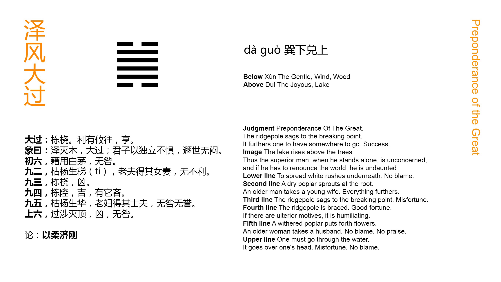

Chinese: 大过 ䷛ dà guò

Dà Guò ䷛ suggests to us a beam that is weak. There will be advantage in moving (under its conditions) in any direction whatever; there will be success.
1. The first SIX, divided, shows one placing mats of the white máo grass under things set on the ground. There will be no error.
䷛ changing to ䷪
Matching Line 1 in Adjacent Hexagram: ䷚
2. The second NINE, undivided, shows a decayed willow producing shoots, or an old husband in possession of his young wife. There will be advantage in every way.
䷛ changing to ䷞
Matching Line 2 in Adjacent Hexagram: ䷚
3. The third NINE, undivided, shows a beam that is weak. There will be evil.
䷛ changing to ䷮
Matching Line 3 in Adjacent Hexagram: ䷚
4. The fourth NINE, undivided, shows a beam curving upwards. There will be good fortune. If (the subject of it) looks for other (help but that of line one), there will be cause for regret.
䷛ changing to ䷯
Matching Line 4 in Adjacent Hexagram: ䷚
5. The fifth NINE, undivided, shows a decayed willow producing flowers, or an old wife in possession of her young husband. There will be occasion neither for blame nor for praise.
䷛ changing to ䷟
Matching Line 5 in Adjacent Hexagram: ䷚
6. The topmost SIX, divided, shows its subject with extraordinary (boldness) wading through a stream, till the water hides the crown of his head. There will be evil, but no ground for blame.
䷛ changing to ䷫
Matching Line 6 in Adjacent Hexagram: ䷚
Very extraordinary times require very extraordinary gifts in the conduct of affairs in them. This is the text on which king Wén and his son discourse after their fashion in this hexagram. What goes, in their view, to constitute anything extraordinary is its greatness and difficulty. There need not be about it what is not right.
Looking at the figure we see two weak lines at the top and bottom, and four strong lines between them, giving us the idea of a great beam unable to sustain its own weight. But the second and fifth lines are both strong and in the centre; and from this and the attributes of the component trigrams a good auspice is obtained.
Line 1 being weak, and at the bottom of the figure, and of the trigram Sun, which denotes flexibility and humility, its subject is distinguished by his carefulness, as in the matter mentioned; and there is a good auspice.
Line 2 has no proper correlate above. Hence he inclines to the weak 1 below him; and we have the symbolism of the line. An p. 118 old husband with a young wife will yet have children; the action of the subject of 2 will be successful.
Line 3 is strong, and in an odd place. Its subject is confident in his own strength, but his correlate in 6 is weak. Alone, he is unequal to the extraordinary strain on him, and has for his symbol the weak beam.
Line 4 is near 5, the ruler's place. On its subject devolves the duty of meeting the extraordinary exigency of the time; but he is strong; and, the line being in an even place, his strength is tempered. He will be equal to his task. Should he look out for the help of the subject of 1, that would affect him with another element of weakness; and his action would give cause for regret.
Line 5 is strong and central. Its subject should be equal to achieve extraordinary merit. But he has no proper correlate below, and as 2 inclined to 1, so does this to 6. But here the willow only produces flowers, not shoots; -- its decay will soon reappear. An old wife will have no children. If the subject of the line is not to be condemned as that of 3, his action does not deserve praise.
The subject of 6 pursues his daring course, with a view to satisfy the extraordinary exigency of the time, and benefit all under the sky. He is unequal to the task, and sinks beneath it; but his motive modifies the judgment on his conduct.